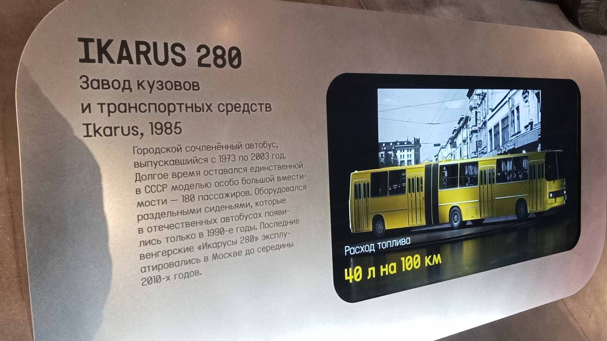

Ikarus 280 (1985)
Перед вами городской сочленённый автобус, выпускавшийся с 1973 по 2003 год. Долгое время он оставался единственной в СССР моделью особо большой вместимости — 180 пассажиров. Данный экземпляр был выпущен в 1985 году и сейчас находится в коллекции Музея Транспорта Москвы.
Особенность: Это один из немногих экспонатов музея, в который можно войти и своими глазами увидеть салон легендарной «гармошки».
Общая информация об экспонате
🏭 Производство
Завод-изготовитель: Завод кузовов и транспортных средств Ikarus (Венгрия)
Модель: Ikarus 280
Год выпуска экспоната: 1985
Период выпуска модели: 1973–2003
📍 Музейный статус
Местонахождение: Музей Транспорта Москвы
Состояние: Не эксплуатируется (музейный экспонат)
Доступ: Открыт для входа внутрь
Расход топлива: 40 л на 100 км
⭐ Роль в истории: Долгое время Ikarus 280 оставался единственной в СССР моделью особо большой вместимости. Он оборудовался раздельными сиденьями, которые в отечественных автобусах появились только в 1990-е годы. Последние венгерские «Икарусы 280» эксплуатировались в Москве до середины 2010-х годов.
Технические характеристики
Основные параметры
Длина: 16,5 м
Ширина: 2,5 м
Высота: 3,16 м
Сухая масса: 12 580 кг
Вместимость: 180 пассажиров
Силовая установка
Двигатель: Rába-MAN (лицензионный)
Расположение: под полом салона, в базе
Высота пола: 920 мм
Расход топлива: 40 л / 100 км
История экспоната и модели
Начало выпуска
В 1973 году началось серийное производство Ikarus 280. Модель стала частью нового 200-го семейства с единой агрегатной базой.
Год выпуска экспоната
Именно эта машина сошла с конвейера завода Ikarus в 1985 году. Она успела застать расцвет эпохи «гармошек» на улицах советских городов.
Раздельные сиденья
Только в 1990-е годы раздельные сиденья, которые были в «Икарусе», начали появляться в отечественных автобусах.
Конец производства
В 2003 году выпуск Ikarus 280 был завершён. Всего было выпущено 60 993 автобуса.
Прощание в Москве
Последние венгерские «Икарусы 280» эксплуатировались в Москве до середины 2010-х годов.
Сохранение для истории
Данный экземпляр был отреставрирован и занял достойное место в экспозиции Музея Транспорта Москвы. В него можно войти.
Особенности конструкции
Сочленённая конструкция
Две секции кузова, соединённые шарнирным узлом. Двигатель расположен под полом салона.
Раздельные сиденья
Автобус оборудовался раздельными сиденьями, которые в отечественных автобусах появились только в 1990-е годы.
Широкие двери
Высота пола 920 мм увеличивала время посадки-высадки. Чтобы компенсировать эту проблему, все пассажирские двери сделали максимально широкими.
Доступ внутрь
Экспонат является одним из немногих, в который можно войти. Вы можете увидеть салон, посидеть на сиденьях и оценить планировку.
Фотогалерея

Экспонат 1985 года.

Музейная информация.

Внутреннее убранство (можно войти).
Нажмите на фото для увеличения
«Долгое время Ikarus 280 оставался единственной в СССР моделью особо большой вместимости — 180 пассажиров. Последние венгерские "Икарусы 280" эксплуатировались в Москве до середины 2010-х годов».